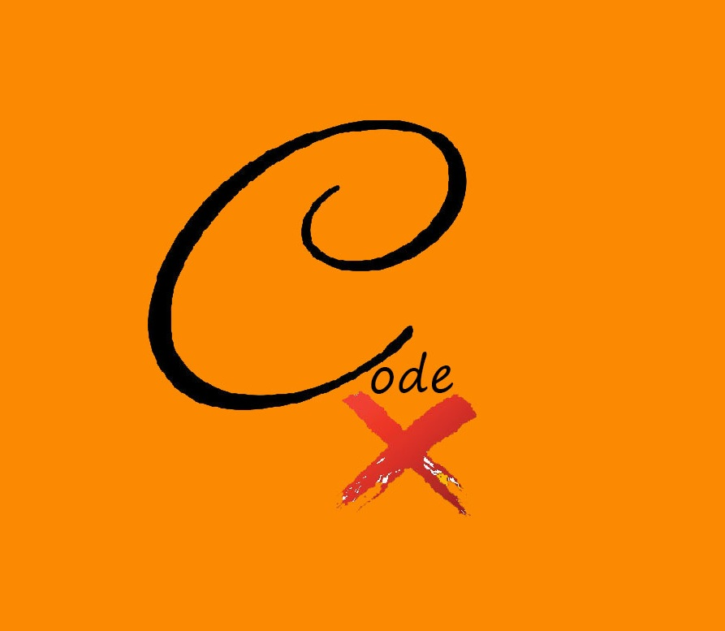
This is CodeX. The idea behind this project was to create a website that caters to both creators and providers wishing to expand the market of 3D printing. Users who wish to 3D print an item can use our website to find available 3D printers near them. A provider could also share their 3D printer for others to use for a service fee. Through this 3D printing sharing site, we hope to make it easier for creators to bring their ideas to life so they can continue to design, create, and dream.
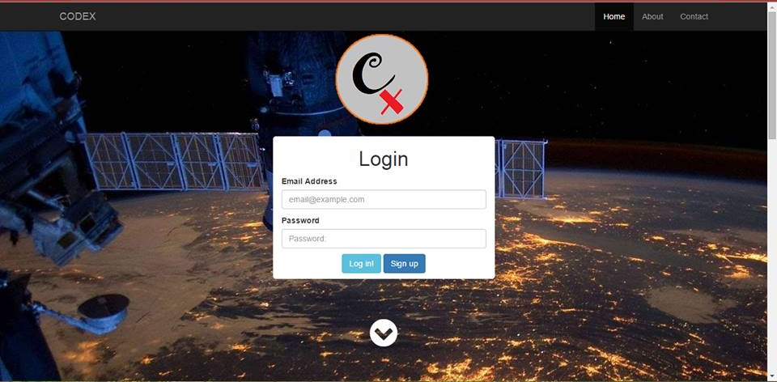
The image above is the home page of our website. CodeX was one of the first group projects I worked on. The project itself is still under development and has been placed on hold for the time being. Despite that, the process of developing this project was very interesting in many ways and we were able to implement a simple site.
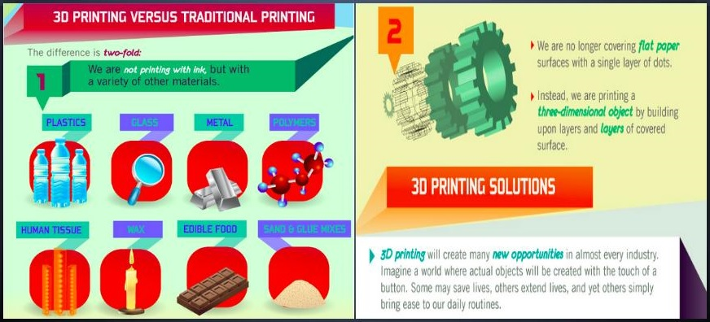
However, before we could begin working on our website, we had to do an intense analysis of the market to estimate our chances of whether or not this idea would be feasible. As shown in this image, we could see that the market for 3D printing is relatively new and growing, making this a great place to start our business.
 (1).jpg)
My specific role in this project was to gather various pieces of information on the market in order to project our growth. This information included in depth analysis of current competitors, costs of operation, and data on our consumer target group
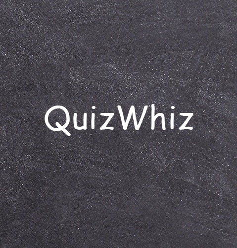
This is QuizWhiz. This project was designed to provide students with an engaging and interactive study experience that moves away from the dull and traditional methods of notetaking and reading textbooks. To add on to the interactivity, we implemented gaming features by including statistics to track improvement on subjects and a trivia like interface to play and challenge others.
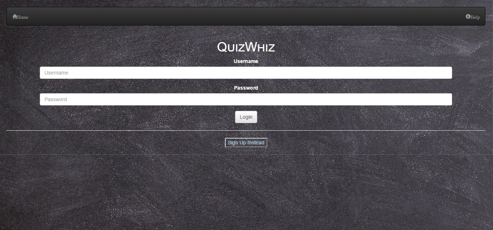
The image above is of the homepage. It is a simplistic and functional page with the basic interfaces implemented, however there is still more work to be done on it and various social features that we wish to add. This project was one of the more time consuming ones I have been a part of due to it requiring intense need finding, prototyping, and user testing along with the actual development.
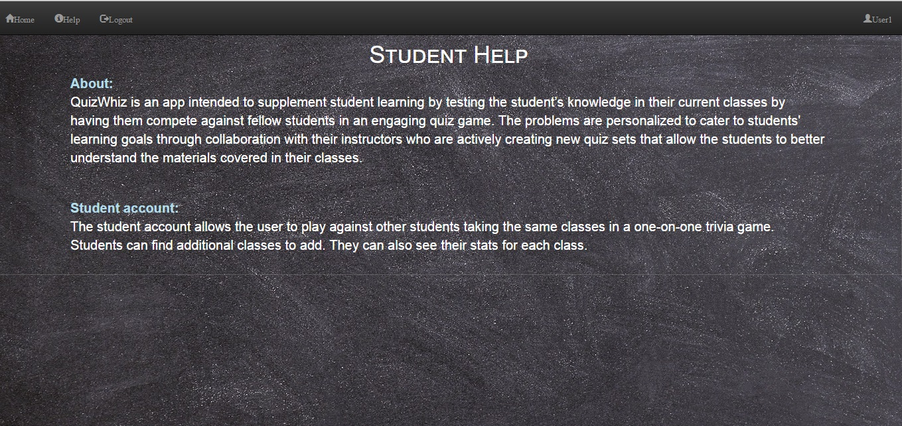
The process of coming up with our idea was unique from other projects I have worked on up until that point. This was due to the fact that we began by trying to redefine an already existing task. We decided to focus on the study method and find a way to make this process easier and more engaging. To set us apart from other studying sites, we attempted to include instructors and other lecturers aside from students in order to personalize the subject matter of our target users.
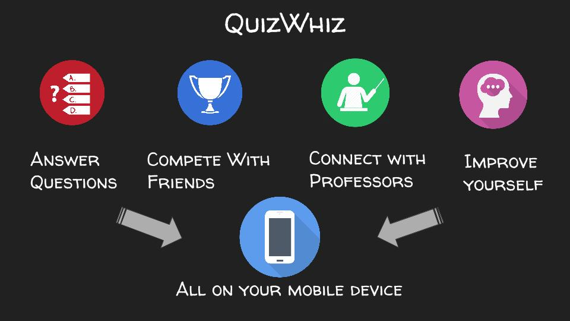
My specific role in this project was to interview various users to determine what their needs are. After this I had to create a prototype to show a rough idea of what we want our final product to look like. After this I was in charge of finding users to test our prototype and make changes according to their findings. Finally the image above shows a simplistic summary of our idea. After we implemented our web page, we had to present our idea to a group
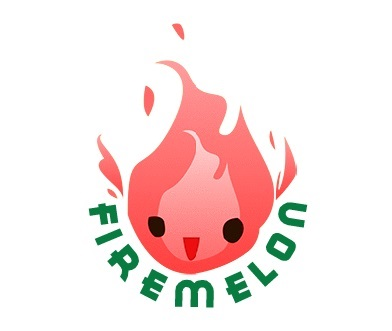
This is Firemelon. This is perhaps my favorite project I have worked on so far. The idea behind Firemelon is to create a productivity app with a gaming element added onto it in order to make sure users are able to keep track and follow through with their tasks. Firemelon includes many features such as a social game where you compete to grow virtual melons on a farm to show off your productivity. Aside from this it is an excellent scheduler with a friendly interface that allows you to prioritize tasks, create groups and display available times in order to manage other important life events not related to work.
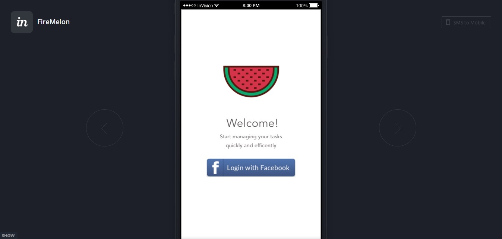
Firemelon is still under development, but as shown above the basic functionality is made possible to visualize through the app InVision. The image above is the welcome screen for the app. The work on his app was made possible with the help of an excellent team of developers and designers. Overall the experience with Firemelon has been very interesting and rewarding.
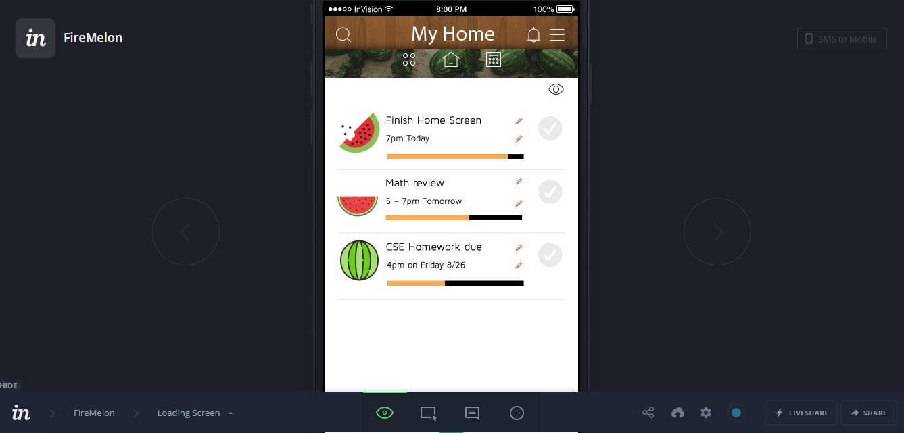
The basic function of the app is displayed on the homescreen above. Firemelon allows you to filter your task in order to give priority to what matters to you. You can also create and manage a group by creating groups and adding members. Firemelon also doubles as a social game by allowing you to synchronize your Facebook account to the app. As with the other apps. This required intense research to figure out what users would like to see in a productivity app.
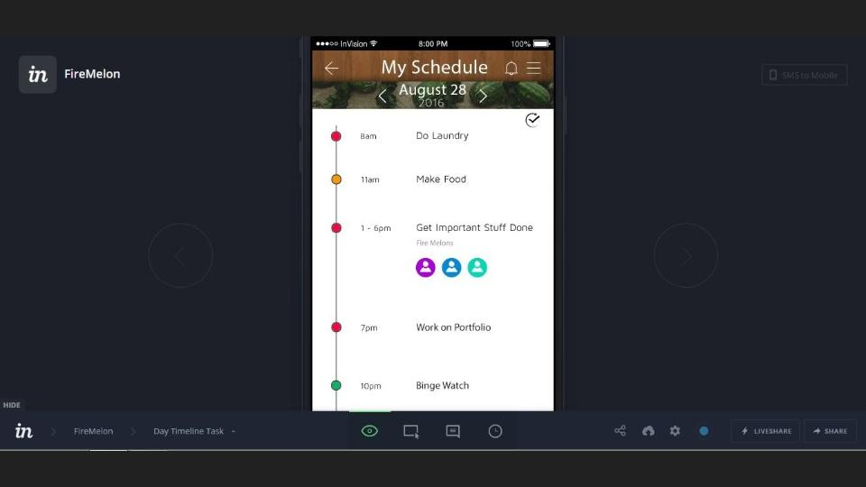
My specific role was to help in designing the layout of the app. I first started by interviewing a few people to get an idea about what the users want. My group was in charge of generation a prototype based on the interview results and then I was able to help in designing a layout of a few basic screens. Aside from this each member was in charge of writing up a blog to keep track of progress and important milestones. Overall this experience was very pleasant and I am satisfied with the work so far.

{kind=link}
{kind=link}
{kind=link}
{kind=link}
{kind=link}
{kind=link}
{kind=link}
{kind=link}